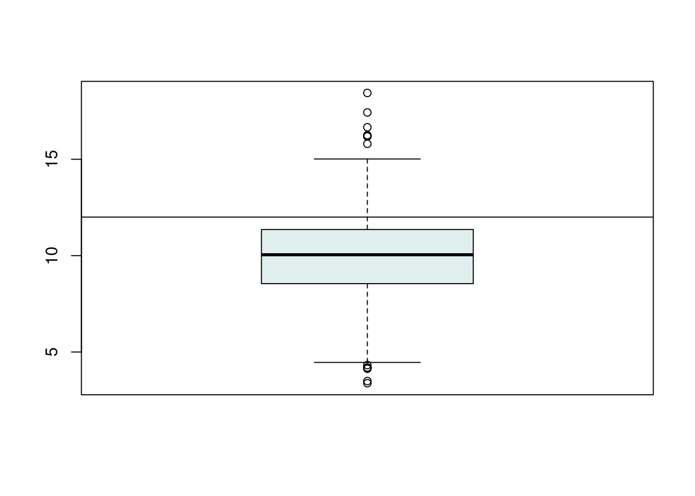

El Análisis exploratorio de datos es fundamental en la ciencia de datos ya que te da una idea aproximada de como son tus datos y de qué preguntas puedes responder. En esta parte del proceso, se experimenta con los datos y se visualizan los datos para tratar de descubrir patrones o plantearse nuevas preguntas que quizas no habias pensado abordar antes de este análisis.
A la hora de realizar gráficos analíticos, los cuale son quizá el componente más importante del análisis exploratorio, debes tener en cuenta algunos principios que sería bueno considerar cada vez que lleves a cabo un análisis de este tipo.
Se usan gráficos en los análisis exploratorios porque se quiere
lograr entender las propiedades de los datos, observar si existen
patrones en ellos, sugerir estrategias para modelos como lineales o no
lineales y para realizar debug análisis (observar en que parte del
proceso hay bugs o errores).
Algunas características de estos gráficos exploratorios es que son
rápidos y fáciles de hacer, además de que se realizan gran cantidad de
estos. Generalmente son para entendimiento personal y no para
presentarlo como resultado final de un análisis final.
Cosas como el color, los ejes, las leyendas, las formas y tamaños son dejadas para luego de estos análisis generalmente, cuando se quieren presentar los análisis en otras etapas del proyecto o en otros entornos más formales.
pollution<-read.csv("https://raw.githubusercontent.com/juanpaat/courses/master/04_ExploratoryAnalysis/exploratoryGraphs/data/avgpm25.csv")
head(pollution)## pm25 fips region longitude latitude
## 1 9.771185 1003 east -87.74826 30.59278
## 2 9.993817 1027 east -85.84286 33.26581
## 3 10.688618 1033 east -87.72596 34.73148
## 4 11.337424 1049 east -85.79892 34.45913
## 5 12.119764 1055 east -86.03212 34.01860
## 6 10.827805 1069 east -85.35039 31.18973summary(pollution$pm25)## Min. 1st Qu. Median Mean 3rd Qu. Max.
## 3.383 8.549 10.047 9.836 11.356 18.441boxplot(pollution$pm25,col = "azure2")
abline(h=12) #agregar alguna marca de interes. 
hist(pollution$pm25, col = "azure2", breaks = 100) # breaks son el número de barras
rug(pollution$pm25) # Barras en la parte inferior del histogramahist(pollution$pm25, col = "blue")
rug(pollution$pm25)
abline(v=12,lwd =2)
abline(v=median(pollution$pm25), col = "black",lwd = 4)5) Barplot
barplot(table(pollution$region), col="blue", main = "Numero de condados en each región")